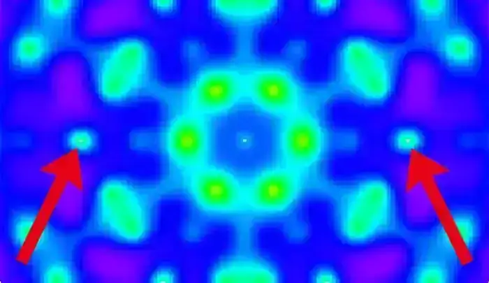
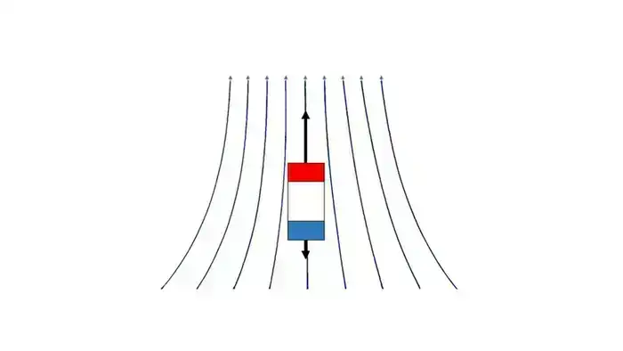

Why theorists expect them
In 1931 Dirac showed that if even one magnetic monopole exists anywhere in the universe, electric charge must be quantised in units of a fixed value. Since charge quantisation is observed and otherwise unexplained, that is a strong hint.
Maps, diagrams and images





Grand unified theories go further: they predict monopoles with masses around 10¹⁶ GeV, produced abundantly in the early universe. That prediction caused a problem — so many monopoles should have survived that they would overclose the universe. Inflation was partly motivated as a solution, by diluting them away.
What has been found
No elementary magnetic monopole has ever been detected. Searches include the MoEDAL experiment at the LHC, IceCube's look for monopoles in cosmic rays, and induction experiments using superconducting loops — the classic 1982 Blas Cabrera event was a single candidate that never repeated.
Meanwhile, condensed-matter physicists have made monopole-like quasiparticles. In spin ice, magnetic moments arrange so that emergent monopoles appear at the ends of 'Dirac strings', and in 2009 these were observed collectively. They are real excitations of a material, not fundamental particles — an important distinction the popular coverage often drops.
Fundamental monopoles exist somewhere in the universe: expected by most unified theories, not observed. Live debate.
Monopoles can be made in a lab as material excitations: done, repeatedly, since 2009. Documented.
A monopole can be harvested to give free energy / break physics: fiction. The quasiparticles are not usable as a power source; creating them costs at least what you get back.
The pattern is worth noticing: a genuine, subtle result in condensed matter becomes 'scientists create magnetic monopole' becomes 'free energy'. The archive links the real papers.
Why it is in the archive
Because the null result is scientifically load-bearing. The absence of monopoles constrains every unification scheme, and the monopole problem is one of the reasons inflation is taken seriously.
See dark matter for the same logic applied to a different missing particle.
Sources for this page
- Wikipedia, “Magnetic monopole” — theory, searches, spin iceen.wikipedia.org
- Dirac (1931), Proceedings of the Royal Society A — quantised singularitiesdoi.org
- Morris et al. (2009), Science — Dirac strings and monopoles in spin icedoi.org
- MoEDAL experiment, CERN — monopole searches at the LHCmoedal.web.cern.ch
Open resources on this topic
- BookConditions for free magnetic monopoles in nanoscale square arrays of dipolar spin ice — ['L. A. S. Mól', 'W. A. Moura-Melo', 'A. R. Pereira'] · 2010 (Internet Archive, free to read)
- BookMassive Electrodynamics and Magnetic Monopoles — Mark Israelit · 1996 (Internet Archive, free to read)
- BookEnergy Losses of Magnetic Monopoles in Aluminum, Iron and Copper — ['S. Cecchini', 'L. Patrizii', 'Z. Sahnoun', 'G. Sirri', 'V. · 2016 (Internet Archive, free to read)
- PapersOpen-access articles: DOAJ · PubMed Central · Internet Archive Scholar
- BooksPublic-domain and borrowable copies: Open Library · Project Gutenberg · Google Books
Cite this page
Momin, S. (2026). Magnetic Monopoles. The Larger World Archive. https://drsamonline.github.io/LARGE_GLOBE/magnetic-monopoles.htmlMomin, Sohil. “Magnetic Monopoles.” The Larger World Archive, 2026, https://drsamonline.github.io/LARGE_GLOBE/magnetic-monopoles.html.Momin, Sohil. “Magnetic Monopoles.” The Larger World Archive, 2026. https://drsamonline.github.io/LARGE_GLOBE/magnetic-monopoles.html.@misc{magnetic2026magnetic,
author = {Momin, Sohil},
title = {Magnetic Monopoles},
year = {2026},
howpublished = {The Larger World Archive},
url = {https://drsamonline.github.io/LARGE_GLOBE/magnetic-monopoles.html},
note = {Last reviewed 20 November 2026}
}Last reviewed 20 November 2026 · Corrections policy · this page is not peer reviewed